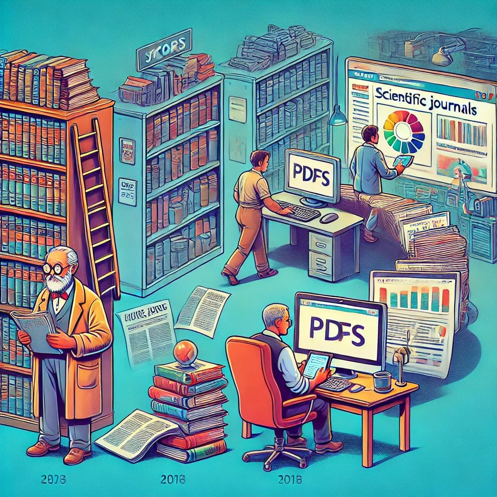

Transformações nas revistas científicas: Minha experiência como autor e editor
![]()
Meu primeiro contato com a ciência ocorreu no início da década de 1990, como bolsista de iniciação científica do CNPq. Foi em meados dessa década que publiquei meu primeiro artigo científico, em co-autoria, na revista Brasileira de Fruticultura. Um trabalho de mestrado no qual colaborei em algumas etapas da pesquisa laboratorial. Naquela época, minha compreensão sobre publicações científicas era extremamente limitada - uma lacuna que permaneceu mesmo após o mestrado (em 1999), quando precisei eu mesmo fazer a submissão do manuscrito da minha dissertação para a revista Árvore. Essa lacuna era reflexo da falta de uma disciplina formativa (o que ainda persiste nos cursos de pós-graduação) bem como de uma orientação específica sobre como funcionavam as revistas e o processo editorial.
Naquele tempo, publicar um artigo começava com o envio pelo correio de quatro cópias impressas do manuscrito para a secretaria da revista, acompanhadas de uma carta de apresentação (cover letter). O processo demandava uma estrutura física e pessoal (normalmente um secretário e um diagramador) por parte das revistas para gerenciar o fluxo de manuscritos, revisões e correspondências. Embora sem entender muito na ocasião, lembro de ter visitado uma sala de secretaria de revista que era abarrotada com envelopes e selos de correio, os quais eram enviados dentro dos envelopes para os editores, que por sua vez enviavam para os revisores. Do lado dos revisores, os comentários e sugestões no texto eram feitos normalmente diretamente no papel, enquanto que (a partir de meados de 1990) os autores realizavam as correções em processadores de texto em computadores pessoais, exigindo planejamento cuidadoso para evitar atrasos e responder adequadamente a cada ponto levantado. Essa era, no Brasil, foi marcada pelo protagonismo das publicações de sociedades científicas e de faculdades/universidades, com comunidades acadêmicas engajadas como revisores e editores. Já no doutorado, no início da década de 2000, com uma melhor visão sobre o processo, acompanhei o avanço das plataformas digitais que vieram para revolucionar o processo editorial, tornando-o completamente online. Nesse sentido, é justo destacar o papel que o SciELO desempenhou na história das revistas científicas no Brasil, revolucionando a prática de distribuição de artigos ao fornecer acesso aberto e gratuito a conteúdos científicos. O SciELO em muito contribuiu para a visibilidade global das revistas brasileiras ao integrá-las em bases indexadoras internacionais e ao oferecer ferramentas para monitorar métricas de impacto.
Por outro lado, esse rápido avanço tecnológico facilitou o surgimento de novas revistas de editoras comerciais menores em vários lugares do mundo, que também proliferaram, transformando o panorama da publicação científica global. Comparado ao esforço braçal e aos longos prazos impostos pelo correio convencional, o novo modelo era muito mais ágil e acessível, mas trazia novos desafios, como a crescente competição e a profissionalização dos periódicos.
As sociedades científicas e as revistas de instituições de ensino ou pesquisa começaram a enfrentar uma concorrência forte com o crescimento das revistas internacionais com textos publicados somente em inglês, e que, assim, passaram a atrair bons trabalhos de autores nacionais também em busca de maior visibilidade de suas pesquisas. Essa mudança também implicou na redistribuição e aumento da demanda por revisores, que antes eram quase exclusivos de revistas científicas nacionais vinculadas às sociedades. Diante desse cenário, as revistas foram pressionadas a se modernizar para atender às crescentes exigências das principais agências de fomento do país, como a CAPES e o CNPq. A CAPES, ao avaliar os programas de pós-graduação, e o CNPq, ao financiar pesquisadores, passaram a dar grande peso à produtividade acadêmica e à qualidade das publicações. Isso obrigou as revistas de algumas sociedades científicas a adotarem práticas editoriais mais ágeis e tecnológicas, como plataformas de submissão e revisão online, bem como estratégias para internacionalizar seus periódicos. Além disso, houve uma pressão para aumentar a visibilidade global, incluindo a publicação de artigos em inglês, a indexação em bases renomadas e a adoção de métricas como o fator de impacto. Essa transformação exigiria uma mudança cultural dentro das sociedades, para que se adaptassem ao novo cenário. Para as revistas nacionais, algumas decisões estratégicas precisaram ser tomadas para sobreviver e se destacar em um cenário cada vez mais competitivo. Primeiro, a adoção de plataformas de submissão online foi essencial, mas isso exigiu treinamento do staff administrativo, editores-chefes e membros do corpo editorial. Segundo, a internacionalização tornou-se inevitável para muitas revistas, levando à mudança de seus nomes para o inglês e à aceitação de manuscritos nesse idioma, com o objetivo de ampliar a visibilidade global e atrair mais autores internacionais.
No entanto, essas mudanças, quando aconteceram, nem sempre ocorreram de forma tranquila. Em sociedades científicas, algumas decisões estratégicas são colegiadas e debatidas em congressos científicos que ocorrem anualmente ou a cada dois anos, onde os interesses e perspectivas de diferentes grupos podem entrar em conflito. Propostas de modernização e internacionalização feitas pelo editor responsável muitas vezes enfrentaram resistência de membros mais tradicionais, que temiam a perda de identidade da revista ou a exclusão de parte da comunidade acadêmica nacional. Esse processo de adaptação, portanto, foi marcado por negociações e, em alguns casos, por um ritmo mais lento do que o necessário para acompanhar as transformações globais.
A rápida transformação no cenário editorial contrasta fortemente com o período anterior (antes de 2000), onde a maior mudança tecnológica havia sido a substituição das máquinas de datilografia pelos computadores. Revistas que não acompanharam essa modernização pagaram um preço alto: muitas não conseguiram sobreviver e encerraram suas atividades, enquanto outras ainda lutam para se manterem ativas e sofrem com redução do número de submissões. Soma-se a isso a implementação do sistema de classificação de periódicos pela CAPES, o Qualis, que introduziu notas para os periódicos baseadas em critérios objetivos, como indexadores internacionais, e subjetivos, definidos pelas áreas de avaliação da CAPES. Essa mudança gerou uma forte pressão sobre as revistas nacionais, intensificando a concorrência e, para algumas, causando um duro golpe em sua relevância e sobrevivência. Em busca de aumentar o fator de impacto, houve casos de revistas que passaram a adotar práticas questionáveis, como a auto-citação excessiva ou citações cruzadas e combinadas entre revistas, para inflar seus indicadores de citação. No entanto, essa estratégia criou um círculo vicioso, pois os indexadores passaram a penalizar essas práticas, reduzindo as notas dessas revistas no sistema Qualis e minando ainda mais sua credibilidade. Assim, a busca por relevância acadêmica por meio de métricas de citação trouxe desafios adicionais, forçando revistas a equilibrar ética editorial com a necessidade de competir em um mercado cada vez mais globalizado e exigente. As revistas que conseguiram superar os desafios e prosperar no mercado competitivo foram aquelas que abandonaram tradições rígidas e modernizaram-se rapidamente por meio de mudanças estratégicas. Uma boa parte desse progresso ocorreu devido a parcerias com grandes editoras internacionais, que identificaram nas sociedades científicas uma oportunidade para expandir seus portfólios de revistas em diferentes países. Essas parcerias trouxeram diversas vantagens, incluindo a transferência de todo o processo de produção – desde a editoração até a distribuição – para as editoras, permitindo que as revistas se concentrassem exclusivamente em sua principal missão: o processo avaliativo conduzido por seu corpo editorial.
A terceirização desse trabalho reduziu a carga operacional sobre as revistas e trouxe maior eficiência, mas também introduziu novos desafios relacionados ao controle de qualidade. O que antes era gerido diretamente pelas equipes internas das revistas agora dependia de mecanismos externos das editoras, exigindo novas formas de supervisão e alinhamento para garantir que os padrões científicos fossem mantidos. Apesar disso, essas parcerias possibilitaram a profissionalização do processo editorial, maior alcance global e um posicionamento estratégico em bases de dados e indexadores de alto impacto, fatores que foram essenciais para a consolidação das revistas que decidiram trilhar esse caminho.
O futuro das revistas científicas será marcado por mudanças contínuas, em um ritmo ainda mais acelerado, impulsionado principalmente pela automação e pela integração de ferramentas de inteligência artificial (IA). Essas tecnologias já estão começando a transformar o cenário editorial, com aplicações em etapas do processo como detecção de plágio e sugestão de revisores com base em big data.
Espera-se que plataformas editoriais tornem-se ainda mais integradas, oferecendo soluções completas que conectem autores, editores e revisores de maneira mais eficiente, com fluxos de trabalho otimizados. A IA também poderá contribuir para análises preditivas, permitindo que revistas identifiquem tendências científicas emergentes e adaptem suas políticas editoriais para atrair os trabalhos mais relevantes. Contudo, esses avanços tecnológicos exigirão um novo nível de adaptabilidade por parte das revistas, demandando capacitação de equipes e revisão constante de práticas éticas para lidar com os desafios e oportunidades trazidos pela IA.

Texto publicado no LinkedIn. Faça login para discutir!
Back to top